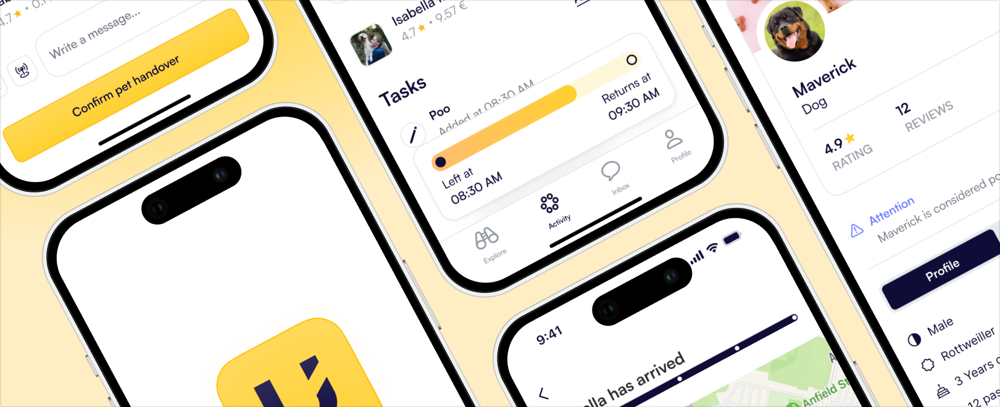
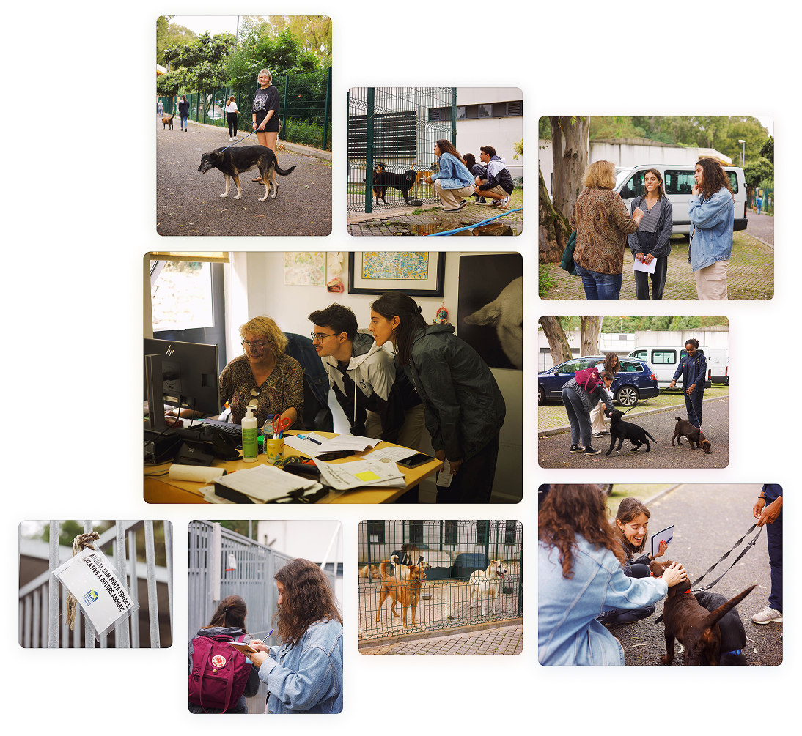
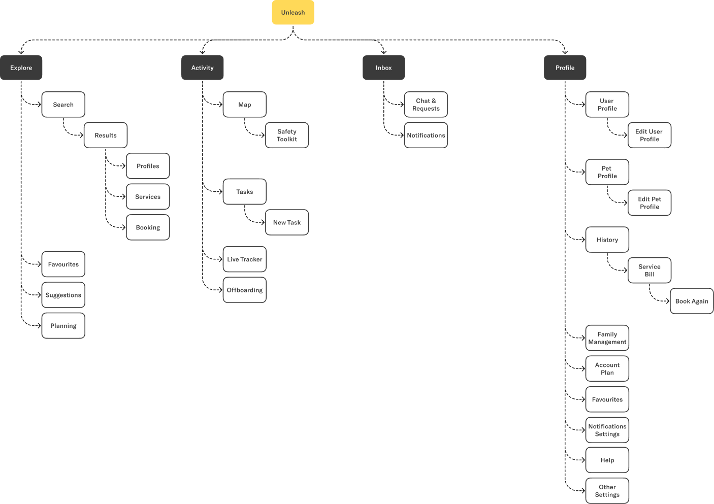
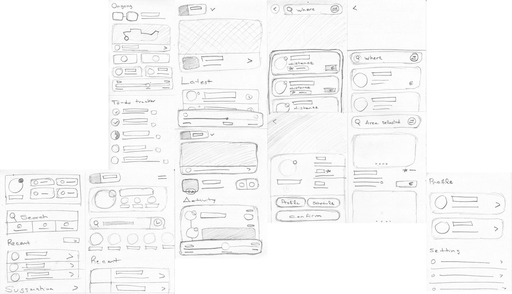
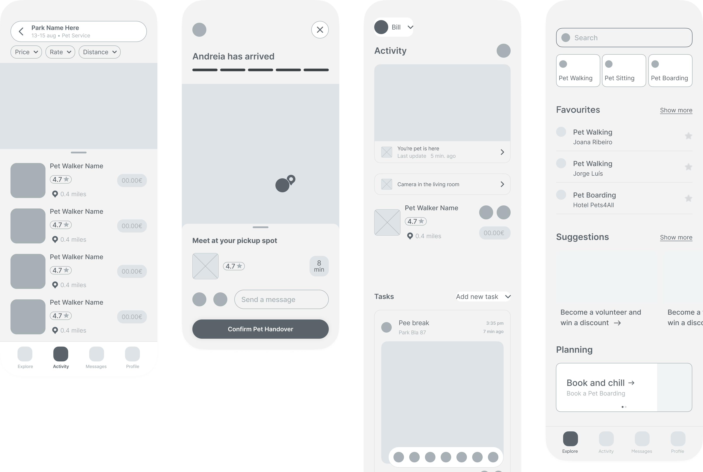

Discover
Started with desk research, market analysis and a survey to understand pet ownership, care routines and existing alternatives.
Unleash - MVP Concept, Postgrad
Unleash is an MVP concept for pet care services, designed to help families with pets find reliable support when they are away, busy, travelling or unable to keep their usual routines.
The project went from identifying a need to developing a proposal through research, validation, product definition and interface exploration.
I worked in a team composed of me and two other designers.

Pet owners often need support when plans change, when they travel, or when they cannot take their pets with them. The challenge was to understand whether this need could become a useful service, and what would make both pet owners and service providers feel confident using it.
Pet owners need to feel confident that their animals are cared for by reliable people.
The service needed to support occasional needs, different routines and multiple pet care scenarios.
Providers need clear information, instructions and tools to manage care safely.
Started with desk research, market analysis and a survey to understand pet ownership, care routines and existing alternatives.
Analysed the research, mapped key findings and refined the opportunity around trust, cost, services, routines and concerns.
Translated insights into product vision, information architecture, sketches and wireframes for the core service experience.
Created mockups and iterations for the main flows, including service discovery, pet records, activity tracking and profile management.
The first stage combined data analysis, market benchmarking and a quantitative survey to understand the opportunity space and identify the strongest research directions.
Portugal showed a relevant pet care market, with pets being part of many households and often treated as family members.
Sources: Público, Rádio Renascença, Atlas da Saúde.
We analysed both direct and indirect competitors to benchmark their features, patterns and best practices. We examined their UX and UI to identify areas where we could improve and distinguish our product in the market. The goal was focused on offering a trustworthy service.
Rover, Trusted House Sitters, Pet Sitter, Cão Nosso
Airbnb, Uber
To kick off the user research, we conducted a quantitative survey with over 100 responses to understand more about the needs of pet owners.
We collected answers about the costs of having a pet, which services people use, how having a pet impacts daily life and family plans, and concerns that could arise around the product.
The focus was also to understand how we could attract pet service providers to the platform.
118 respondents
Pet owners prioritize well-being and invest mainly in food, health and hygiene.
There was interest in occasional services at competitive prices, especially when owners needed to change plans.
Boarding, sitting and walking emerged as the most relevant services.
The average daily time spent walking pets was around 30 minutes, suggesting an opportunity for pet-walking services.
Trust, direct contact and clear pet information were key concerns for both pet owners and service providers.
After identifying the main opportunity areas, we framed the problem through hypotheses that helped guide the next stage of qualitative research.
After this, we proceeded to qualitative analysis. We held 4 interviews: 2 with pet owners and 2 with experts on the topic, including a CEO of a cat and dog hotel and a service provider and volunteer in animal causes.
These interviews allowed us to learn more about legal aspects, monetisation of services and details that only people who had been dealing with the topic for years could know.
Security and management were the primary concerns of both pet owners and service providers. These became two pillars that the product was built around.
We visited the Lisbon Animal House and had the pleasure to talk to Elizabete Andrade, Volunteer Coordinator for 8 years. She helped us understand specific processes that were very valuable for us to develop the user experience of our product.
Aspects of safety, management and handling of pets became much more clear and allowed us to complement ideas we were developing, as well as gain new insights.

It was during this field research that we discovered the necessity for a pet record. This organised system was inspired by the management practices employed at this kennel.
Unleash helps families with pets find care when they are unavailable, away, or need temporary support.
The product connects owners with pet walking, sitting and boarding services, while supporting different pets, routines and care needs.

Exploring early interface ideas before committing to detailed screens

